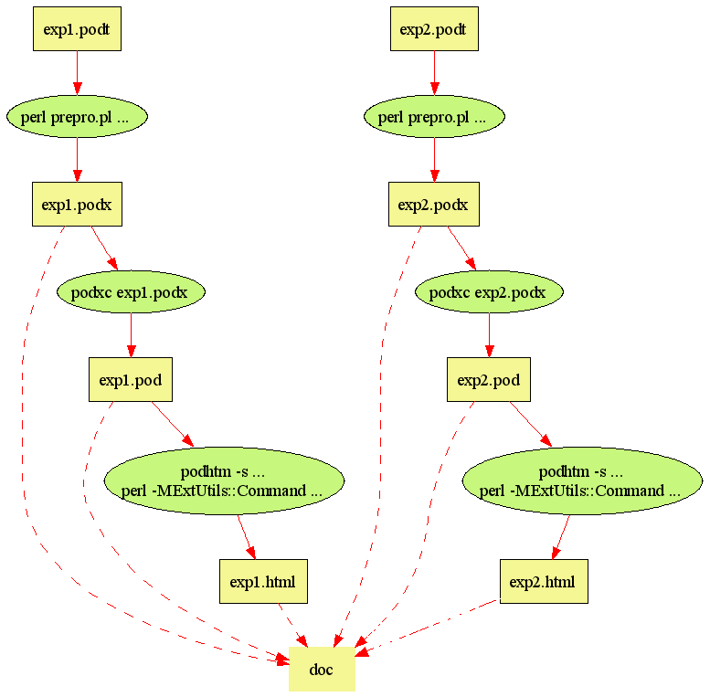

| 前序 - 数据库的概念模型与关系模型 |
前序 - 数据库的概念模型与关系模型
章亦春 <agent2002@126.com>
3030602110 计算机0304班
计算机科学与通信工程学院 江苏大学
Maintainer: Agent Zhang <agent2002@126.com> Date: 19 Nov 2005 Last Modified: 9 Dec 2005 Version: 0.01
概念模型的描述如下：
供应商（[供应商代码]，供应商名，供应商状态，所在城市）
零件（[零件代码]，零件名，颜色，重量）
工程项目（[工程项目代码]，工程项目名，所在城市）
供应情况 供应商:零件:工程项目 = m:n:p （供应数量）
其实上面的概念模型的描述记法已经正规化了，我编写了一个 E-R 图生成器， 能够直接根据上面的概念模型描述生成对应的 E-R 图：
具体说来，概念模型的文字描述放在了 er-diagram.cm 文件中，然后用下面 的命令便可以生成 PNG 格式的 E-R 图了：
$ er-diag -s 4x4 er-diagram.cm
er-diagram.png generated.
Hooray!
顺便提一下，``-s 4x4'' 的意思是将 PNG 图片的宽和高分别设为 4 英寸。
在将概念模型转换到关系模型的过程中，命名方法亦从汉语转换成了英语：
S ( [SNO], SNAME, STATUS, CITY )
零件（[零件代码]，零件名，颜色，重量）
P ( [PNO], PNAME, COLOR, WEIGHT )
工程项目（[工程项目代码]，工程项目名，所在城市）
J ( [JNO], JNAME, CITY )
供应情况 供应商:零件:工程项目 = m:n:p （供应数量）
SPJ ( [ {SNO}, {PNO}, {JNO} ], QTY )
使用 SQL DDL 描述就是：
drop table SPJ
drop table S
drop table P
drop table J
create table S
(SNO varchar(8) primary key,
SNAME varchar(8),
STATUS integer,
CITY varchar(6))
create table P
(PNO varchar(8) primary key,
PNAME varchar(8),
COLOR varchar(4),
WEIGHT integer)
create table J
(JNO varchar(8) primary key,
JNAME varchar(8),
CITY varchar(8))
create table SPJ
(SNO varchar(8),
PNO varchar(8),
JNO varchar(8),
QTY integer,
primary key (SNO, PNO, JNO),
foreign key (SNO) references S,
foreign key (PNO) references P,
foreign key (JNO) references J)
本实验共有四个小实验，每个小实验都对应一份单独的报告。所有的 HTML 格式 的报告都是程序自动生成的。下面是根据项目的 Makefile 自动生成的文件构造 流程图：

让我的文档生成工具使用完全不同的 RDBMS 是非常容易的。我们要做的只是在 执行 ``nmake doc'' 命令之前设置适当的 DSN 环境变量，例如
set DSN=DBI:SQLite:dbname=zwy.db
就会使我们的工具使用 SQLite 数据库，并将之创建在当前工作目录的 zwy.db 文件中。
使用 Windows 的 Access 或者 MS SQL Server 数据库也是很简单的，只需 利用控制面板中的“ODBC数据源”工具建立指向目标数据库的 ODBC 数据源，比如 取名叫 foo，则用下面的命令就可以使我们的文档生成器指向它：
set DSN=DBI:ODBC:foo
这里的 foo 可以指向 ODBC 支持的任何种类的数据库，包括 MS Access, MS dBase, MS Excel, Oracle, Visual FoxPro, 以及 MS SQL Server.
经过测试，MS SQL Server 支持所有的四个报告中使用的 SQL 查询（事实上， 在实验三中的几个 SQL 语句使用了 T-SQL 特有的语法）。
MS Access 支持文档中的大部分 SQL 语句，但由于该数据库本身的局限性，实验 二的最后一个稍微复杂了一些的查询和实验三的一些查询未能通过：
select JNO, sum(QTY) as Quantity
from SPJ
where PNO = 'P1'
group by JNO
order by Quantity desc
DBD::ODBC::st execute failed: [Microsoft][ODBC Microsoft Access Driver] 参数不足，期待是1。 (SQL-07002)(DBD: st_execute/SQLExecute err=-1)
update SPJ
set QTY =
(select sum(QTY)
from SPJ
where SNO in ('S1', 'S2') and JNO = 'J1' and PNO = 'P1')
where SNO = 'S2' and JNO = 'J1' and PNO = 'P1' and exists
(select *
from SPJ
where SNO = 'S1' and JNO = 'J1' and PNO = 'P1')
DBD::ODBC::st execute failed: [Microsoft][ODBC Microsoft Access Driver] 操作必须使用一个可更新的查询。 (SQL-HY000)(DBD: st_execute/SQLExecute err=-1)
alter table SPJ
add check (QTY > 0 and QTY < 1000)
[Microsoft][ODBC Microsoft Access Driver] 字段定义语法错误。 (SQL-42000)(DBD: st_prepare/SQLPrepare err=-1)
grant select
on SPJ
to zwy
[Microsoft][ODBC Microsoft Access Driver] 无效的 SQL语句； 期待 'DELETE'、'INSERT'、'PROCEDURE'、'SELECT'、或 'UPDATE'。 (SQL-42000)(DBD: st_prepare/SQLPrepare err=-1)
revoke all privileges
on P
from public
[Microsoft][ODBC Microsoft Access Driver] 无效的 SQL语句； 期待 'DELETE'、'INSERT'、'PROCEDURE'、'SELECT'、或 'UPDATE'。 (SQL-42000)(DBD: st_prepare/SQLPrepare err=-1)
我还用 Linux 程序员们喜爱的 SQLite 进行了测试。结果表明，除实验三使用 的与 check 和授权有关的查询之外，实验一、实验二和实验四所有的 SQL 语句 都能成功执行。实验三中失败的几个查询如下：
alter table SPJ
add check (QTY > 0 and QTY < 1000)
DBD::SQLite::db prepare failed: near ``check'':
syntax error(1) at dbdimp.c line 269
grant select
on SPJ
to zwy
near ``grant'': syntax error(1) at dbdimp.c line 269
revoke all privileges
on P
from public
near ``revoke'': syntax error(1) at dbdimp.c line 269
我们看到，SQLite 虽然小巧，但支持的标准 SQL 特性还是比较多的。
从性能上讲，在我的 Windows 2000 的机器上，MS SQL Server 2000 的性能比 MS Access 2003 和 SQLite 3.x 都要好得多；而后两者性能相近。
| 前序 - 数据库的概念模型与关系模型 |